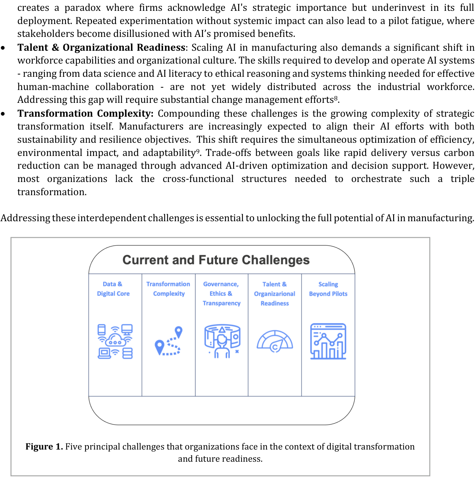

人工智能在制造业价值链中的展望
The Outlook of AI in Manufacturing and Value Chains
Kiva Allgood¹, Devendra Jain¹, Benedikt Gieger¹
¹ 世界经济论坛先进制造与供应链中心，瑞士科洛尼/日内瓦
通讯作者：kiva.allgood@weforum.org
现状
AI已从一项有前景的技术演变为一种变革性力量，从根本上重塑着全球制造业与价值链。过去十年间，AI及其应用在数据可用性、算法和计算能力的推动下日臻成熟。因此，制造商日益认识到AI在规模化部署时驱动效率、可持续性和韧性方面阶跃式改进的潜力。世界经济论坛的全球灯塔网络（Global Lighthouse Network）——一个先进制造基地社区——正是此类AI驱动改进的有力例证。
AI的早期用例聚焦于预测性维护和质量控制。如今，AI的整合已覆盖完整价值链：需求感知、供应规划、自动化内部物流、能源优化和动态调度。值得注意的是，当前的大部分影响仍然来自传统AI模型——这些模型持续驱动着显著收益，往往在转换成本、周期时间和缺陷率方面超过50%的改进[2]。重要的是，AI不再是一项孤立技术；它正在嵌入各类适合特定目的的智能系统中——这些系统是数字化的、自适应的或自主的。
与此同时，整个制造业面临着前所未有的多重压力叠加：劳动力短缺、气候挑战、地缘政治紧张局势和可持续性要求[3]。AI有潜力填补生产力差距和人口挑战、本地化生产并使工业运营脱碳。AI驱动的仿真、自我学习智能体和混合人机协作模型的进步，有望重新定义产品的设计、制造和运输方式[4]。
尽管取得进展，但这段旅程远未完成。当一些企业正向全面部署迈进时，许多企业仍困于孤立的试点——受制于碎片化的数据生态、遗留基础设施、人才短缺或战略错位。弥合这一差距需要可扩展的数字解决方案、可持续性与韧性框架、强有力的数据管理以及劳动力能力的转变[5]。
展望未来，焦点必须从实验转向规模化影响。对于制造商而言，这包括沿着AI融入工业系统的演进轨迹定位自身。这一旅程通常经历三个递进阶段：数字化、自适应和自主。在数字化阶段，企业专注于构建基础能力，如互联数据基础设施、实时可见性和流程自动化。在自适应阶段，AI被用于情景仿真、预测性洞察和动态决策，使企业能够响应变化的市场条件。自主阶段标志着自我优化、自我修复运营的出现——例如AI代理以最少人工干预管理复杂网络[6]。在制造商沿此轨迹前行之际，成功将AI作为战略使能工具加以利用的企业，将定义下一个智能化和可持续价值创造的时代。
当前与未来的挑战
规模化AI应用受到一系列相互关联的技术、组织和伦理障碍的阻碍（如图1所示）。世界经济论坛与全球行业领导者和灯塔工厂合作，识别出一套一致的障碍，必须加以解决以释放AI下一波变革性影响的潜力：
-
数据与数字核心：尽管运营数据大量存在，但其中相当一部分在各职能部门间仍处于孤立状态，限制了端到端的可见性。许多组织运营着异构IT系统（包括遗留平台、本地数据库和不同的云服务），这些系统从未针对AI集成进行设计。缺乏互操作性和标准化数据模型阻碍了可扩展AI应用的开发。
-
治理、伦理与透明度：在使用AI时，问责制、公平性和透明度至关重要，但许多AI算法的"黑箱"特性使理解、审计或解释决策的努力变得复杂。训练数据或模型设计中嵌入的偏见可能导致歧视性结果，可能影响供应商、工人或产品质量。这些风险因AI创新的快速步伐而放大，新模型和新能力几乎每天都在涌现。因此，制造商越来越难以有效评估、验证和治理这些系统[7]。
-
超越试点规模化：许多企业在将概念验证倡议转化为企业级平台时遇到困难，原因是投资回报不明确或与遗留系统存在集成问题。这制造了一种悖论：企业承认AI的战略重要性，但对其全面部署投入不足。缺乏系统性影响的重复实验也可能导致试点疲劳——利益相关者对AI承诺的收益感到失望[8]。
-
人才与组织就绪：在制造业规模化AI还需要劳动力能力和组织文化的重大转变。开发和运营AI系统所需的技能——从数据科学和AI素养到有效人机协作所需的伦理推理和系统思维——尚未在工业劳动力中广泛分布。弥补这一差距需要大量的变革管理努力。
-
转型复杂性：叠加这些挑战的是战略转型本身的日益复杂性。制造商被越来越期望将AI工作与可持续性和韧性目标相结合。这一转变要求同时优化效率、环境影响和适应性[9]。通过先进的AI驱动优化和决策支持，可以管理诸如快速交付与碳减排等目标之间的权衡。然而，大多数组织缺乏协调此类三重转型所需的跨职能结构。
应对这些相互关联的挑战对于释放AI在制造业中的全部潜力至关重要。

应对挑战的科技进展
为应对AI在制造业应用中所面临的多方面挑战，科技进展必须指向解决持久障碍。一代新的科技进展正在涌现，推动工业环境中可能性的边界：
-
领域特定的工业基础模型：与大型通用基础模型不同，较小的、领域特定的模型——在制造特定数据（如机器日志和工艺参数）上训练——正在兴起。它们的专业化焦点使得更准确、更具上下文感知能力的预测成为可能，同时显著减少了大型模型通常所需的计算资源和能源。其紧凑的尺寸增强了在边缘（如车间内或互联机械设备中）的可部署性——在这些场景中，延迟、带宽和数据隐私是关键关切[10]。
-
可解释性工具：可解释性工具的日益普及和整合使得对AI决策的解释成为可能。在工业环境中——安全、合规和信任至关重要——理解AI系统为何做出特定建议的能力是不可或缺的。可解释AI（XAI）技术使用户能够将结果追溯到输入因素和假设。这种透明度建立了信任促进了监管合规，并允许人类专家在必要时验证AI输出，确保自动化增强而非削弱运营完整性。
-
智能体系统：最重大进展之一是通过AI智能体（虚拟的和具身的）开发智能运营。虚拟智能体在软件环境中运作，而具身智能体在工厂车间执行日益复杂的物理任务[11]。一个说明性的例子是：AI智能体自主管理车间 disruptions——在机器停机等情况下，AI智能体主动重新调度生产并实时协调物流流动。该系统以自然语言向主管提供上下文洞察，并促进快速、知情的响应，从而加强人类智能体与机器智能体之间的信任。
-
人-AI协作系统：随着AI系统承担常规、确定性任务，人类的角色正向监督、异常处理和创造性问题解决转变。这种关系日益趋向共生：智能系统处理复杂性和规模性问题，而人类则在不可预见的情况下提供上下文判断、伦理评估和适应性。此外，人类与AI之间的互动正成为更有效的协作。XAI、自然语言界面和增强现实工具使一线工人能够直观地与AI系统互动。这培养了信任，并通过将AI嵌入现有工作流程来弥合数字技能差距[12]。
这些进展共同不仅在解决当前AI应用的局限性，而且为智能、自适应和有韧性的制造业新时代奠定基础。
结语
AI已准备好重新定义制造业和价值链，成为下一个工业时代的基本操作系统。制造商必须超越试点并构建为AI量身打造的强大数字基础，以减少集成努力。
成功还取决于将AI部署与更广泛的转型目标保持一致，并将人类置于这一转型的核心。数字化、可持续性和韧性的交汇催生了一种新型工业转型模式——由AI赋能并由AI编排的模式。制造商不再将这三者视为三个独立领域，而是将它们统一为一次转型——一种"三重转型"。这一体系有效地创造了"自我修复"的运营——能够在其级联到价值网络之前预测和缓解冲击。在一个以复杂性、波动性和系统性约束为特征的时代，将AI作为转型使能工具加以拥抱的制造商，将成为领导者。
致谢
免责声明：本文的原始内容（而非任何被引用或包含的第三方内容）受CC BY 4.0许可证保护。为避免疑义，所表达的观点仅代表作者个人观点，不代表作者雇主的官方立场。
参考文献
[1] World Economic Forum. (2025). World Economic Forum: Global Lighthouse Network.
[2] World Economic Forum. (2025). WEF Global Lighthouse Network: The Mindset Shifts Driving Digital Impact and Scale in Digital Transformation.
[3] World Economic Forum. (2023). World Economic Forum: A Global Rewiring: Redefining Global Value Chains for the Future.
[4] World Economic Forum. (2025). Navigating the AI Frontier: A Primer on the Evolution and Impact of AI Agents.
[5] World Economic Forum. (2025). AI in Action: Beyond Experimentation to Transform Industry. Geneva/Cologny: World Economic Forum.
[6] Metzger, D. (2024, 08 22). SAP. Retrieved from Modernizing Supply Chains: The Autonomous AI-Driven Future: https://news.sap.com/2024/08/modern-autonomous-ai-supply-chain/
[7] World Economic Forum. (2025). AI in Action: Beyond Experimentation to Transform Industry. Geneva/Cologny: World Economic Forum.
[8] World Economic Forum. (2025). Putting Talent at the Centre: An Evolving Imperative for Manufacturing. Geneva/Cologny: World Economic Forum.
[9] Christmann, A.-S., Crome, C., Graf-Drasch, V., Oberländer, A., & Schmidt, L. (2024, 01 23). The Twin Transformation Butterfly. Retrieved from https://www.researchgate.net/publication/377631322_The_Twin_Transformation_Butterfly
[10] Zaika, K. (2024, 09 18). Forbes. Retrieved from Why Choose A Domain-Specific LLM For Your Business?: https://www.forbes.com/councils/forbestechcouncil/2024/09/18/why-choose-a-domain-specific-llm-for-your-business/
[11] World Economic Forum. (2025). Frontier Technologies in Industrial Operations: The Rise of AI Agents. Geneva/Cologny: World Economic Forum.
[12] World Economic Forum. (2025). Frontier Technologies in Industrial Operations: The Rise of AI Agents. Geneva/Cologny: World Economic Forum.
[13] Marco, N. d. (2023, 09 29). Forbes. Retrieved from Building Resilient Organizations With AI: https://www.forbes.com/councils/forbestechcouncil/2023/09/29/building-resilient-organizations-with-ai/